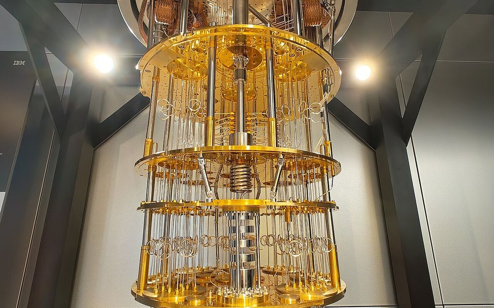

Strip away the Bloch sphere and the bra-kets: physically, a superconducting qubit is a capacitor wired across one nonlinear component. Here is what that component does, and why everything hinges on it.
You'll be able to name the parts of a transmon qubit and say what each one does.
Any qubit needs two things: something that oscillates, and something that makes the oscillation uneven. An LC circuit, a coil and a capacitor, oscillates beautifully, but its energy levels are evenly spaced, which makes it useless as a qubit: the pulse that drives level 0 to level 1 also drives 1 to 2, and 2 to 3. Swap the coil for a Josephson junction, a component that acts like an inductor whose effective inductance depends on the current already flowing through it, and the levels bunch up unevenly. Now the bottom two levels can be addressed on their own, and a resonant pulse rotating you between them is a quantum logic gate.

Picture a swing. Push it, and it settles into a rhythm: back and forth at one fixed rate, forever, if nothing slows it down. An LC circuit, a capacitor (a bucket that stores charge) wired to a coil (a flywheel that stores current), does the electrical version of the same thing. Charge sloshes into the capacitor, drains out through the coil, sloshes back, and the whole thing rings at one fixed frequency set by how big the bucket and the flywheel are.
Here is the catch. Quantum mechanically, that ringing circuit doesn't just have one energy: it has a whole ladder of allowed energies, evenly spaced, rung after rung, like a musical instrument's overtones. Evenly spaced sounds harmless. It's fatal for a qubit. If you send in a pulse tuned to boost the circuit from the bottom rung to the second rung, that exact same pulse is equally good at boosting it from the second rung to the third, and the third to the fourth. You can never cleanly stop at "just two levels", the two things every classical bit and every qubit need.
So the goal isn't just "build something that oscillates"; a plain LC tank already does that beautifully, and it's useless. The goal is to build something that oscillates unevenly: where the first rung costs a noticeably different amount of energy to climb than the second one. That unevenness is called anharmonicity, and one component supplies almost all of it.
How, in real terms: keep going ↓
WorkingThe component is the Josephson junction: two superconductors separated by an insulating gap so thin (a couple of nanometers) that paired electrons (Cooper pairs) tunnel straight through it. Below a critical current it carries current with exactly zero resistance, which is already strange. What makes it useful here is stranger still: the relationship between the current flowing through it and the phase difference across it isn't a straight line, the way it is for a normal wire or a normal coil. It's a sine function. Wired into a circuit, it behaves like an inductor, but one whose effective "inductance" depends on how much current is already flowing through it. Push it harder, and it pushes back disproportionately. That disproportion is the nonlinearity the whole field is built on.
Wire an ordinary capacitor straight across a single Josephson junction, and you get the transmon, far and away the most common superconducting qubit design, running under most of Google, IBM and Rigetti's hardware. Electrically it is almost the same object as the plain LC tank above, with one piece swapped: the linear coil is replaced by the junction's nonlinear one. Solve that circuit and the evenly-spaced ladder collapses into an uneven one: each rung costs a little less energy to climb than the rung below it.
| Quantity | What it means | What sets it |
|---|---|---|
| Josephson energy EJ | How "stiff" the junction's nonlinear inductor is | The junction's critical current |
| Charging energy EC | The cost of putting one extra Cooper pair on the capacitor | The total shunt capacitance |
| Qubit frequency ω01 | The energy gap you drive | ≈ √(8EJEC) − EC (leading order) |
| Anharmonicity α | How much the next gap up shrinks by | ≈ −EC (leading order) |
The ratio EJ/EC is the one dial that matters, and it's a real trade-off. A real Cooper-pair box (the transmon's ancestor) ran at low EJ/EC and paid for it in charge noise: stray, uncontrolled electric fields constantly jittering the qubit frequency. Koch and colleagues' 2007 transmon paper showed that pushing deep into EJ/EC ≫ 1 (a "fat," well-shielded capacitor) suppresses that charge noise exponentially, while the anharmonicity you need for addressability only shrinks by a slow power law in return. An exponential win paid for with a mild tax is a trade you take every time, which is exactly why the transmon, not its more charge-sensitive ancestor, is the design almost every lab converged on.
With the bottom two levels now sitting at a distinguishable energy gap from the next pair up, a microwave pulse tuned exactly to ω01 drives 0→1 cleanly, without much leaking into level 2. Try it below.
Left: the circuit's own voltage, ringing at whatever frequency the controls below set. Right: its actual energy ladder, computed live from the same numbers: evenly spaced with no junction, uneven the moment you add one.
teal trace = the circuit's own voltage · the ladder is its real energy spectrum, recomputed on every change below · sped up for viewing (real transmons ring some four to six billion times a second)
Toy model, limits stated: both the trace and the ladder come from real calculation: the plain-LC case exactly (En evenly spaced), the junction case from the standard transmon leading-order approximation above (Koch et al. 2007), valid in the EJ/EC ≫ 1 regime the slider stays inside. EC is held at an illustrative, representative 250 MHz throughout; real designs typically sit within a factor of two of that. The drive animation restricts to levels 0 and 1 only and ignores leakage into level 2; real hardware corrects for exactly that leakage with shaped ("DRAG") pulses, not by ignoring it.
An LC circuit is quantized the same way a mechanical oscillator is: canonical conjugate variables (flux Φ across the inductor and charge Q on the capacitor) obey [Φ̂, Q̂] = iħ, and the Hamiltonian H = Q̂²/2C + Φ̂²/2L is exactly a quantum harmonic oscillator, with eigenvalues En = (n + ½)ħω, ω = 1/√(LC). Evenly spaced, as claimed above: this is not an approximation, it is exact.
A Josephson junction's current-phase relation is I = Ic sin φ, with voltage V = (ħ/2e) dφ/dt across it. Treated as a circuit element this defines a nonlinear inductance LJ(φ) = ħ/(2eIc cos φ): a real inductor, but one whose value depends on the bias point, which is exactly the sine-versus-straight-line nonlinearity described above. Its energy scale is the Josephson energy EJ = ħIc/2e.
Shunting a single junction with a capacitor CΣ (charging energy EC = e²/2CΣ) gives the transmon Hamiltonian in the charge basis:
where n̂ is the Cooper-pair number operator and ng the offset charge. In the transmon regime EJ/EC ≫ 1, expanding cos φ̂ past its quadratic (harmonic) term to the next, quartic order turns this into a weakly anharmonic (Duffing) oscillator, giving the leading-order level structure quoted above: ω01 ≈ √(8EJEC)/ħ − EC/ħ, and each successive gap ωn,n+1 smaller than the one before it by α ≈ −EC/ħ (Koch, Yu, Gambetta, Houck, Schuster, Majer, Blais, Devoret, Girvin & Schoelkopf, arXiv cond-mat/0703002, Phys. Rev. A 76, 042319 (2007)). The paper's headline result is the trade this page keeps returning to: charge dispersion, the residual sensitivity to the offset charge ng, falls exponentially in √(8EJ/EC), while the anharmonicity available for gating falls only as a weak power law in EC/EJ. That asymmetry is the case for operating deep in the EJ/EC ≫ 1 regime rather than near the Cooper-pair box's original charge-sensitive point.
The drive, and why it is a gate. Coupling a classical microwave tone to the circuit adds a drive term to the Hamiltonian; in the rotating frame, under the rotating-wave approximation, and restricted to the {|0⟩, |1⟩} subspace, this reduces to the textbook two-level Rabi problem. On resonance, the population in |1⟩ evolves as
where Ω is the Rabi frequency set by the drive amplitude. A pulse cut off at Ωt = π (a π-pulse) leaves P1 = 1: full population transfer from |0⟩ to |1⟩, which is how the X gate is physically implemented. A π/2-pulse instead leaves an equal superposition, the same primitive the homepage's own |0⟩→|+⟩ widget asks you to apply. This is the exact mechanism behind every single-qubit gate on real superconducting hardware, surveyed in full in Krantz, Kjaergaard, Yan, Orlando, Gustavsson & Oliver, arXiv 1904.06560 (Applied Physics Reviews 6, 021318 (2019)); the broader circuit-QED framework this all sits inside is reviewed in Blais, Grimsmo, Girvin & Wallraff, arXiv 2005.12667 (Rev. Mod. Phys. 93, 025005 (2021)).
Off resonance, the same formula generalises. A drive detuned from ω01 by Δ gives P1(t; Ω, Δ) = (Ω²/(Ω²+Δ²))·sin²(√(Ω²+Δ²)·t/2), with Δ = 0 recovering the on-resonance case above exactly. Detuning does two things at once. The oscillation runs at the generalised Rabi frequency √(Ω²+Δ²), which is faster than Ω, so the peak arrives earlier than a π-pulse's timing would suggest; and the peak itself is capped at Ω²/(Ω²+Δ²), so a badly detuned drive cannot reach full population transfer however long you run it. That ceiling is the whole subject of the section below.
The catch this page's widget deliberately simplifies away. Because the transmon is only weakly anharmonic, a fast drive tuned to ω01 has non-negligible spectral weight at the nearby ω12 gap too, leaking population into level 2, which is an error, not a feature. The standard fix is DRAG (Derivative Removal by Adiabatic Gate): add a second control tone proportional to the time-derivative of the first, which analytically cancels the leading leakage term without slowing the gate down. Motzoi, Gambetta, Rebentrost & Wilhelm, arXiv 0901.0534 (Phys. Rev. Lett. 103, 110501 (2009)) reported roughly an order-of-magnitude error reduction relative to the state of the art at realistic transmon parameters, and some form of DRAG shaping runs on essentially every superconducting qubit gate in production today.
Everything above assumed one thing: that the drive is exactly in tune with the qubit. Real hardware will not hold still. Flux noise and stray two-level-system defects nudge a qubit's own frequency hour to hour, so the drive ends up slightly out of tune — detuned — and a detuned drive cannot flip the qubit all the way, however long you run it. Worse, you cannot read the detuning off any dial. All you get back is noisy measurement shots. The game below is what recalibrating against that drift actually looks like. (The section above has the formula that ceiling falls out of.)
You never drive the qubit yourself. You configure the agent that has to find it, blind, while it drifts underneath you.
• The transmon: Koch, Yu, Gambetta, Houck, Schuster, Majer, Blais, Devoret, Girvin & Schoelkopf, arXiv cond-mat/0703002 (Phys. Rev. A 76, 042319 (2007))
• Qubit control and gates, full survey: Krantz, Kjaergaard, Yan, Orlando, Gustavsson & Oliver, arXiv 1904.06560 (Applied Physics Reviews 6, 021318 (2019))
• Circuit QED, the broader framework: Blais, Grimsmo, Girvin & Wallraff, arXiv 2005.12667 (Rev. Mod. Phys. 93, 025005 (2021))
• DRAG, the leakage fix: Motzoi, Gambetta, Rebentrost & Wilhelm, arXiv 0901.0534 (Phys. Rev. Lett. 103, 110501 (2009))
• The Calibration's real-world grounding: Baum, Amico, Howell, Hush, Liuzzi, Mundada, Merkh, Carvalho & Biercuk (Q-CTRL), "Experimental Deep Reinforcement Learning for Error-Robust Gate-Set Design on a Superconducting Quantum Computer," arXiv 2105.01079 (PRX Quantum 2, 040324 (2021)); Sivak, Morvan et al. (Google Quantum AI & Google DeepMind), "Reinforcement Learning Control of Quantum Error Correction," arXiv 2511.08493 (Nature, 2026)
Check yourself
A plain LC circuit and a transmon are both, in a sense, "an oscillating circuit." Why can only one of them be a qubit?
Being able to oscillate is necessary but not sufficient. A qubit needs exactly two addressable levels, and the only way to address two levels without also driving every level above them is for the gaps between levels to be unequal. A linear inductor can never produce that: its restoring force is proportional to displacement, full stop, which is what makes the resulting spectrum perfectly evenly spaced. The Josephson junction's sine current-phase relation is the one component in this circuit that isn't a straight line, and that bend is why it, and no bigger coil, turns an oscillator into a qubit.
What this circuit's two addressable levels look like as a quantum state, and the sphere every gate on this site moves a point around.
Quantum mechanics vs computing →This page's qubit is fragile: any of a thousand tiny nudges knocks it off course. What error correction does about that.
What is error correction? →Who is building this hardware, and how their qubit counts compare.
How the companies compare →